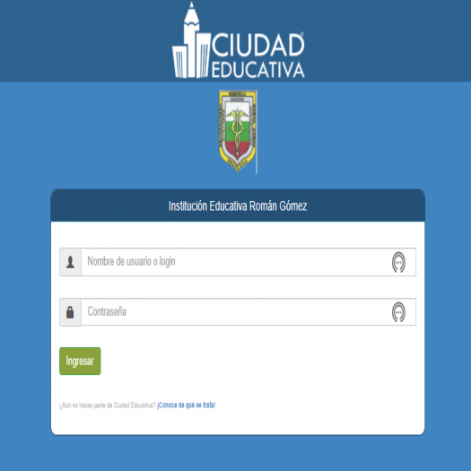

|
Introducción
En un mundo lleno de problemas y soluciones, se crea hoy la solución a un llamado problema de salidas principalmente en los colegios. Más que la solución a un problema es la optimización a un proceso con el fin de mejorar el rendimiento de este. El proyecto se crea principalmente para optimizar el proceso en nuestro colegio: Institución Educativa Román Gómez.
¿Qué es el Control de Salida?
Un control de salida de estudiantes es un procedimiento implementado por instituciones educativas para gestionar y supervisar la salida de los estudiantes del recinto escolar, por casos específicos (como salidas anticipadas). Este control tiene como objetivo garantizar la seguridad de los estudiantes y asegurar que salgan de manera organizada y bajo las condiciones adecuadas.
Misión:
Implementar y gestionar un proceso de control de salida de estudiantes que asegure un ambiente seguro y ordenado en las instituciones educativas, priorizando la protección y bienestar de los estudiantes mediante protocolos claros y supervisión adecuada, en coordinación con los padres y tutores para garantizar su tranquilidad.
Visión:
Ser un sistema de control de salida de estudiantes reconocido por su eficiencia y confiabilidad, que garantice la seguridad y tranquilidad de la comunidad educativa, ofreciendo un entorno escolar seguro donde los estudiantes puedan desarrollarse plenamente, bajo un seguimiento organizado y un protocolo riguroso.
Autores del proyecto:
- Kimberlly Chiquinquirá Ureña Carruyo
- Jhony Andrés Zuluaga González

|